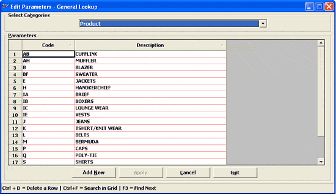

The General Lookup is a generic lookup of entries used to store various lookup information used in Shoper 9. This catalogue captures the values as codes and descriptions under different categories. The information you enter here would be available as lookups during definition of other business catalogues.
For each pre-defined category in Shoper 9, you can create unlimited number of lookup entries which can be used at appropriate catalogue definition.
How to reach: Catalogue > General Lookup
The Edit Parameters – General Lookup window is displayed.

Select Categories: Select the required category for which you want to add or modify the lookup entries.
Parameters: The available lookup entries for the selected Category will be displayed in this grid. (This could be default entries which are created during the company creation or already catalogued entries)
For each lookup entry, information is captured as a combination of Code and Description.
Code: Enter the code for the lookup entry. For example, if the Category selected is Product (ItemClassification1) then the possible values can be Shirts, trousers, etc.
Description: Enter the description of the lookup entry. For the above example, the description can be Men’s Shirt Full Sleeves and Men’s Shirt Half Sleeves, respectively.
Note:
Some of the Categories require additional information to be captured along with the lookup information. When these categories are selected, additional columns for capturing this information (Flag and Number) will also appear in the grid. This is used by Shoper internally and you need not enter these values.
In edit mode only the description of the lookup entry is allowed to be modified.
Ctrl+D: To delete the selected lookup entry. Click any value in a row to select it for deletion. Deletion of any code is possible if it is not used in any of the Shoper transactions or master. Otherwise, appropriate message is displayed.
Ctrl+F: To display a window to facilitate searching of lookup entry. Click OK to search for the required string in the grid.
F3: To continue the search for the next occurrence of the string.